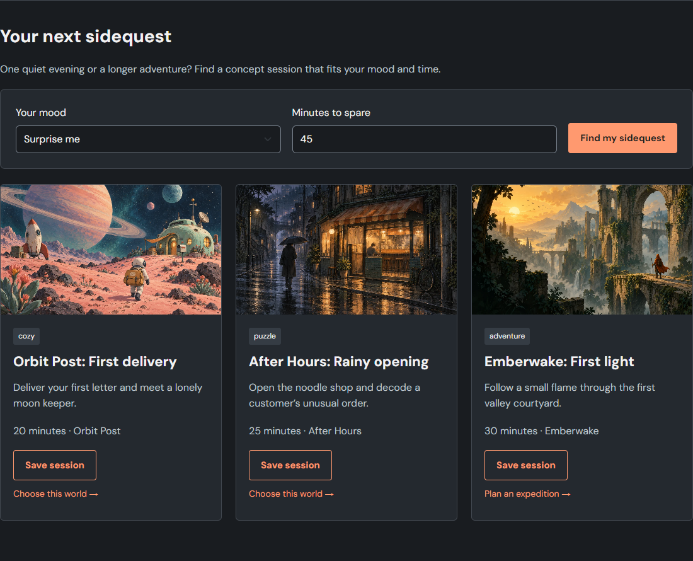
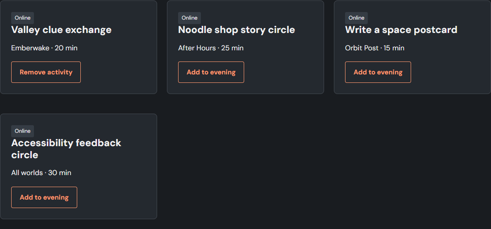
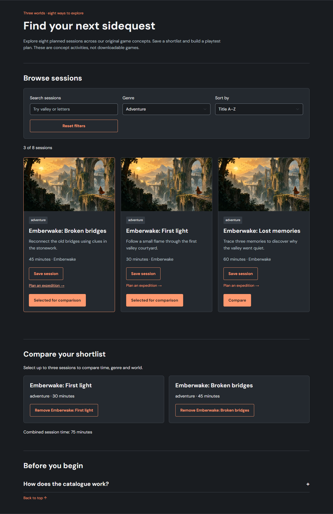
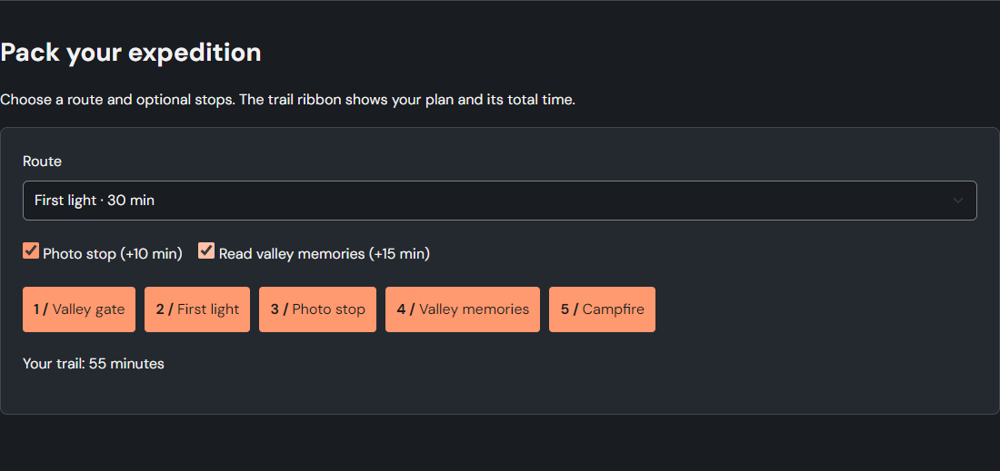
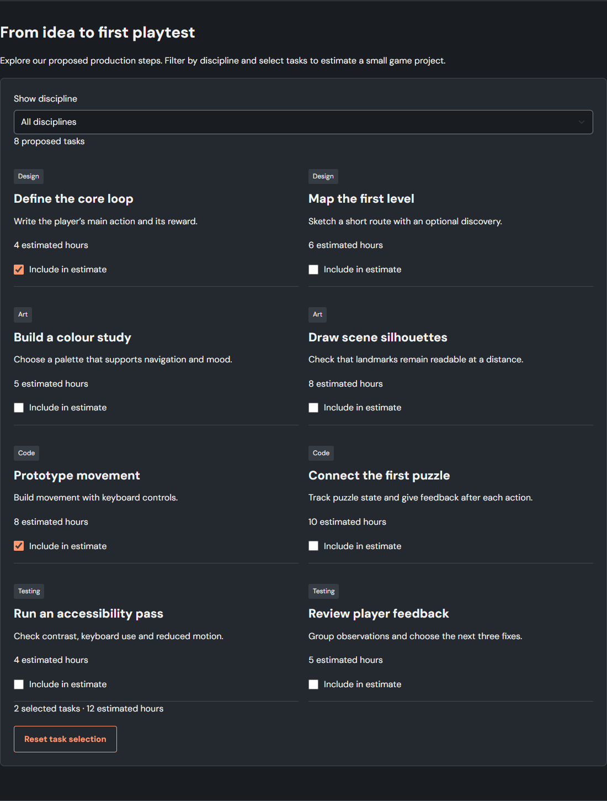
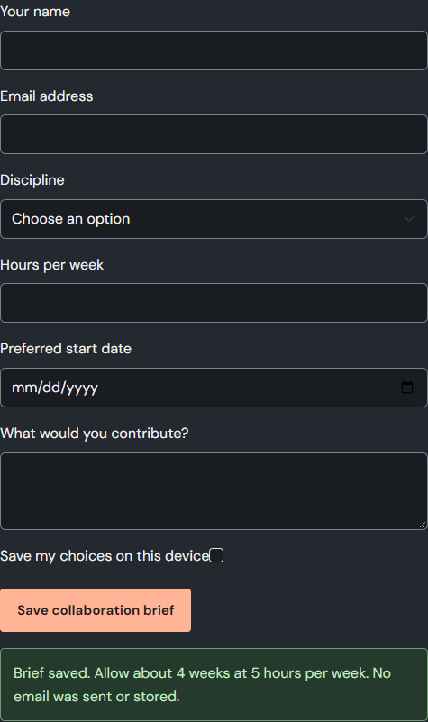
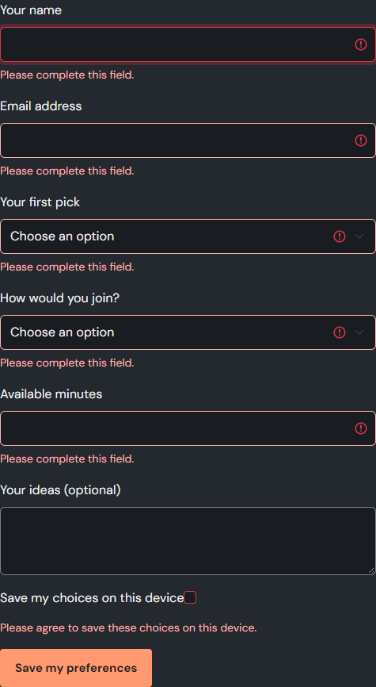
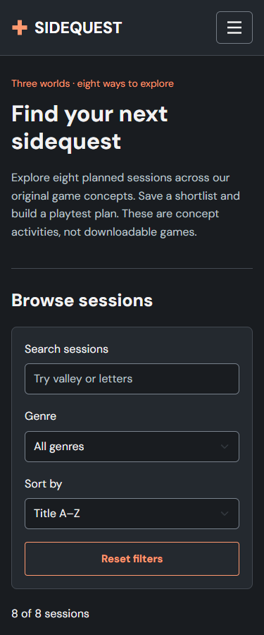

SIDEQUEST / WEB TECHNOLOGIES 1 / ENDTERM
4 November 2026 · Group IT-2511 · Team of three
SIDEQUEST continues the five-page Midterm game-studio website. Visitors can search concept sessions, compare choices, save an expedition, build an evening and estimate a collaboration. No backend is used.
| Member | Prepared responsibility and tests |
|---|---|
| Yerkebulan Abenov yerkebulanabenov7@gmail.com GitHub: Abenovv | Home and Community: recommendations, saved shortlist, activity planner and preferences. tests/yerkebulan.test.cjs and matching browser scenarios. |
| Assan Nurbergen nurbergenasan161@gmail.com GitHub: nurbergenasan161-dotcom | Games and Emberwake: search/filter/sort, comparison, expedition route and form. tests/assan.test.cjs and matching browser scenarios. |
| Kuvandyk Bekarys kuvandykbekarys@gmail.com GitHub: kuvandykbekarys-star | Studio: roadmap, task hours, collaboration estimate/form; browser and report integration. tests/bekarys.test.cjs and matching browser scenarios. |
This contribution map assigns prepared work for review. It does not claim that members already made the commits or completed the individual defense.
Requested target: github.com/Abenovv/EndTerm-WebTechnology
Planned website: abenovv.github.io/EndTerm-WebTechnology/
Deployment is pending; the planned URL is not a verified live Endterm site. The rubric requires the Midterm repository. Obtain instructor approval for this new target or publish to the original repository.
SIDEQUEST / WEB TECHNOLOGIES 1 / ENDTERM
Source: Midterm-Web_Technologies-1stTerm
Base revision: 0c5ff8a8bb1e3792fc80e502bcdec1942a2f10e3
| Midterm | Endterm |
|---|---|
| Three static game cards and simple genre buttons | Eight session objects rendered through the DOM; combined text/genre filters, time sorting and three-session comparison |
| Single saved Emberwake flag | A cross-page saved-session shortlist, total minutes and migration of the old flag |
| Static Emberwake information | Route selection, optional stops, trail ribbon, calculated duration and participant-minutes; validated local plan |
| Small community preference form and static meetup table | Eight searchable activities, persistent evening plan, duration total and expanded inline-validated preference form |
| Static team introduction and credits | Eight production tasks, discipline filter, task-hour estimate and validated collaboration form with weekly estimate |
| Bootstrap FAQ and browser-native form popups | jQuery help, fade feedback and smooth scroll; clear field-level errors, correction and reset |
Emberwake now has a direct navigation link. Only the current page is highlighted. All five pages share keyboard focus, mobile navigation and the existing design. Local storage errors keep prior data and entered values. Corrupted storage does not crash the pages.
No instructor defense remarks were supplied. The team must compare these fixes with the actual Midterm feedback before submitting; this report does not claim unseen remarks were resolved.
No game binaries, real event reservations, email delivery or account system are offered. The plans are useful local browser workflows; wording makes their scope clear.
SIDEQUEST / WEB TECHNOLOGIES 1 / ENDTERM
Home filters sessions by mood and available minutes. It returns up to three choices and explains when none fit. A saved shortlist persists across pages and calculates a duration total.

SIDEQUEST / WEB TECHNOLOGIES 1 / ENDTERM
Community filters eight activities by format and text. Adding or removing an activity updates a saved evening plan. For example, Valley clue exchange (20min) plus Write a space postcard (15min) equals 35min.

Files: js/home.js, js/community.js; tests/yerkebulan.test.cjs. The preference form adds email, 15–180 minutes in steps of five, required choices and consent.
SIDEQUEST / WEB TECHNOLOGIES 1 / ENDTERM
The catalogue combines search, genre and sorting without a reload. Comparison is limited to three sessions and calculates their combined duration. Empty results explain what to change.

Files: js/games.js, js/emberwake.js; tests/assan.test.cjs. A game card links to its corresponding world or preselected expedition route.
SIDEQUEST / WEB TECHNOLOGIES 1 / ENDTERM

The form requires a name, email, date within the next year, 1–6 participants, a phone containing 10–15 digits and consent. Two participants on the 55-minute route give 110 participant-minutes.
The plan stores name, date, route, people and duration. Email and phone are validated but not stored. Invalid fields get inline messages; successful saving resets the form. A blocked storage write preserves both the form and the previously saved plan.
jQuery slideDown/slideUp expands help, fadeIn introduces finder results or form feedback, and animate scrolls back to the main heading. stop(true,true) clears queued effects after repeated clicks. Reduced-motion preferences set effect duration to zero. Buttons and cards have matching hover and focus styles.
SIDEQUEST / WEB TECHNOLOGIES 1 / ENDTERM
Studio renders eight tasks from data. Filtering by discipline preserves selected tasks; the total covers every selected task, including those outside the current filter.

SIDEQUEST / WEB TECHNOLOGIES 1 / ENDTERM
The collaboration form validates discipline, 1–20 weekly hours, a date within the next year and a 20–500 character idea. Code has 18 estimated task hours; at five hours per week the result is ceil(18/5) = four weeks.

Files: js/studio.js; tests/bekarys.test.cjs. Prepared estimates are illustrative, not a promise of a released game or a message sent to the team.
SIDEQUEST / WEB TECHNOLOGIES 1 / ENDTERM


Each field has a label, a dedicated error element and aria-describedby. Errors are absent on first load and disappear as fields are corrected. Form reset happens after a successful save.
All five pages were checked at 375, 768 and 1280 pixels in Chromium. The suite checks horizontal overflow, loaded images, heading order, navigation, focusability, local links and fragments. Actual screenshots are included in docs/screenshots. These checks do not claim a full accessibility audit.
SIDEQUEST / WEB TECHNOLOGIES 1 / ENDTERM
55 automated tests passed, zero failures: 25 domain/validation tests and 30 browser scenarios. Environment: Windows 11 x64; Node.js v24.17.0; npm 11.13.0. Browser: 156.0.8078.80.
Final archive extraction and contribution reconstruction outcomes are recorded in docs/verification.json and the team package’s PACKAGE-VERIFICATION.json. No production build is needed; the HTML/CSS/JS site opens directly.
Run from project root: npm ci, npx playwright install chromium, npm test. Or open index.html to use the site without development tools.
The same credits appear on studio.html#credits; asset licenses are included locally.
Verify the course deadline, actual Midterm feedback, allowed repository, authentic individual commits and final live URL. Each student uploads the team project ZIP and this separate PDF using the required Endterm team filename. A local package does not establish member participation or complete the individual defense.